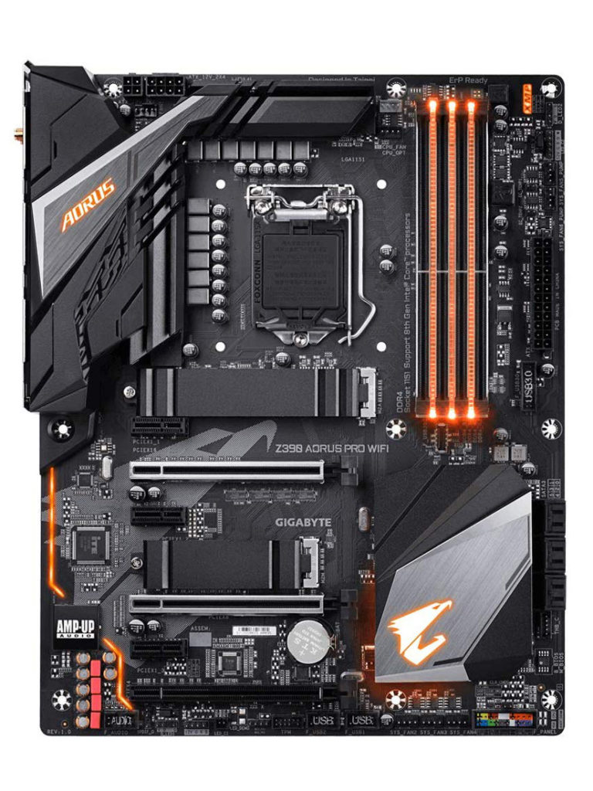

SCHEDA MADRE

È responsabile dunque della trasmissione e temporizzazione corretta di molte centinaia di segnali diversi, tutti ad alta frequenza e sensibili ai disturbi, tra processore e RAM, schede di espansione e periferiche esterne attraverso i vari bus di sistema. La sua buona realizzazione è quindi un fattore chiave per le prestazioni e l'affidabilità dell'intero computer. È composta da un circuito stampato estremamente complesso, ricavato da un sandwich di strati di vetronite e rame: generalmente una scheda madre può avere dai quattro a sei strati di rame. In questi sono ricavate le piste che collegano i componenti, che devono essere calcolate con molta cura: alle frequenze normalmente adoperate dalle CPU e dalle memorie RAM in uso oggi, infatti, la trasmissione dei segnali elettrici non si può più considerare istantanea ma deve tenere conto dell'impedenza propria della pista di rame e delle impedenze di ingresso e di uscita dei componenti connessi, che influenzano il tempo di volo dei segnali da un punto all'altro del circuito. Su questo circuito stampato vengono saldati una serie di circuiti integrati, di zoccoli e di connettori; gli integrati più importanti sono il chipset che svolge la gran parte del lavoro di interfaccia fra i componenti principali e i bus di espansione, la ROM (o PROM, EEPROM o simile), il Socket per il processore e i connettori necessari per il montaggio degli altri componenti del PC e della espansione. La struttura attuale delle schede di sistema dei computer è il frutto di un'evoluzione tecnologica che ha portato a definire un'architettura di sistema valida, in linea di massima, per tutti i sistemi di classe personal computer o di potenza paragonabile. Chiaramente, i server, i blade server o le workstation hanno schede madri specifiche, così come i telefonini o i dispositivi mobili. Infine, qualsiasi apparato informatico o elettronico contiene una scheda madre.